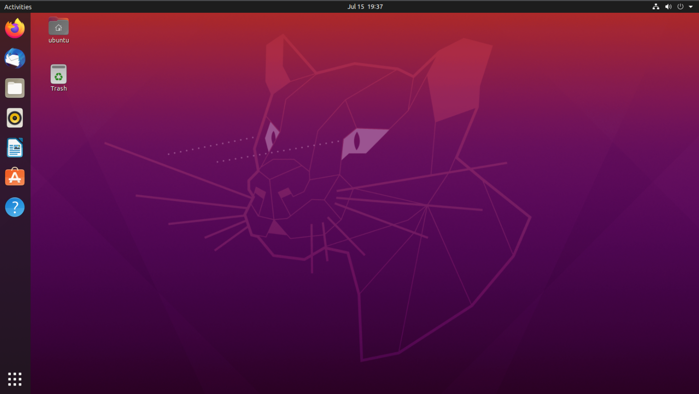

Historie
Linus Torvalds začal vyvíjet jádro Linuxu v roce 1991 jako svůj koníček. Mezi důvody pro vznik právě unixového systému patřil fakt, že Unix je systém, který upřednostňuje jednoduchost a je přednášen na univerzitách (Torvalds studoval na finské univerzitě v Helsinkách obor Informatika). Torvalds byl dále inspirován MINIXem od Andrewa Tanenbauma, který napsal svoji verzi unixového systému jako doprovodný projekt ke své výuce a knihám o operačních systémech. Na rozdíl od něj však Torvalds nevyužil svůj projekt komerčně, protože preferoval otevřený vývoj (viz open source software).
První verze linuxového jádra (0.01) byla na Internetu zveřejněna 17. září 1991.K Linusově překvapení byl o jeho nedokonalý systém velký zájem a záhy začal dostávat e-mailem další podněty, opravy a zdrojové kódy. Torvalds jádro dále vyvíjel a zároveň začal příspěvky ostatních do svého jádra začleňoval a upravené zdrojové kódy obratem zveřejňovat (další verze byla zveřejněna již v říjnu). Od té doby se na vývoji podílely tisíce vývojářů z celého světa. Model vývoje linuxového jádra a podobného softwaru byl později výstižně popsán v eseji Katedrála a tržiště (anglicky The Cathedral and the Bazaar) od Erica S. Raymonda.
Již velmi brzo předběhl Linux ve vývoji svůj vzor – MINIX. Zejména v počátcích byl při vývoji využíván Projekt GNU, který se již delší dobu zabýval myšlenkou vývoje volně dostupného unixového systému, avšak vlastní jádro operačního systému neměl. Z projektu GNU hned počátku Linux využil shell bash a další nástroje (základní unixové nástroje používané na příkazovém řádku, kompilátor GCC, později též GNU C Library a další). Sám Linux však nikdy nebyl součástí GNU, i když samotné jádro používá licenci GPLv2, která též pochází od GNU.
Torvalds je dodnes hlavou vývoje jádra, které je zveřejňováno na serveru kernel.org. Sám vydává nové verze, přičemž některé starší verze jsou udržovány jinými lidmi. Kromě něj na vývoji spolupracují tisíce programátorů z celého světa. Již delší dobu se dá říct, že vývoj jádra je z velké části placen firmami, jako je Red Hat, Intel, IBM a další.

Licence
Distribuce lze nalézt na Internetu a lze je i volně používat, protože se skládají z open source programů. I v distribuci je ke každému programu standardně přiložena licence, která je při instalaci uložena společně s programem na pevný disk, takže si vše uživatel může ověřit (ve skutečnosti open source programy vyžadují, aby s nimi licence byla dodávána nejen u zdrojových kódů, ale i u funkční podoby). Dílo vytvořené distribuce (tj. jak je vše na distribučním médiu organizováno) také podléhá licenci, avšak typicky se je opět open source. Většina linuxových distribucí je sestavována výhradně ze svobodného software, takže je lze nejen volně používat, ale i dále šířit. Některé však mohou obsahovat nesvobodný software, takže je lze volně používat, ale je omezeno jejich šíření. Například v případě, že obsahují komerční programy (ovladače pro grafickou kartu, počítačové hry atp.). Též profesionální komerční distribuce jsou však dostupné pouze po zaplacení (například Red Hat Enterprise Linux, SUSE Linux Enterprise Server), avšak díky povaze open source k některým existují volně šiřitelné identické klony (viz např. CentOS).
Použitelnost a podíl na trhu
Za své dlouhé působení Linux získal mnoho příznivců a významné místo na trhu operačních systémů. Zatím je rozšířený zejména na internetových a intranetových serverech a v oblasti vysoce výkonných výpočetních stanic (v žebříčku 500 nejvýkonnějších superpočítačů/TOP500 má podíl 100% V posledních letech se Linux pozvolna rozšiřuje i do firemní sféry a na domácí počítače, takže jeho podíl na PC dosáhl tři procenta. Přestože zvládá prakticky všechny činnosti od počítače očekávané a mezi jeho přednosti patří bezpečnost, nízká cena a flexibilita, rozšíření stále brání zejména velké množství aplikací dostupných pouze pro Microsoft Windows (zvláště počítačových her) a nejistá podpora spuštění těchto konkrétních aplikací pod Linuxem. Nutno také dodat, že v současnosti se Linux prosazuje i na poli chytrých telefonů a tabletů.
Projekt Wine
Projekt Wine dále poskytuje možnost konkrétní kompatibility se systémem Windows, která umožňuje spouštět nemodifikované aplikace systému Windows v systému Linux. Ta je podporována skupinami jako CodeWeavers, kteří vyrábí komerční verzi softwaru. Od roku 2009 společnost Google rovněž poskytla finanční prostředky na Projekt Wine.
Příkazy v gnu/linux
ls - výpis adresáře
ls -l - podrobný výpis adresáře
ls -a - výpis skrytých
cd - přepínání mezi adresáři
mkdir - vytvoření adresáře
rmdir - smazání adresáře
rm -r - smazání neprázdného adresáře
pwd - aktuální umístění
cp - kopírování
mv - přesun
less - výpis s listováním
cat - výpis textového souboru
nano - textový editor
grep - hledání podřetězce
head - výpis n prvních řádků
tail - výpis n posledních řádků
wc - počet řádků, slov a znaků
du - velikost souboru
touch - vytvoření prázdného txt souboru
awk - rozdělení textu podle oddělovače
tr - nahrazování znaků
sort - seřazení
nl - očislování řádků
adduser - přidání uživatele
adduser [user] [group] - přidání uživatele do skupiny
addgroup - přidání skupiny
userdel - smazání uživatele
userdel -r - smazání uživatele i s daty
su - přepnutí uživatele
sudo su - přepnutí na roota
/etc/passwd - soubor s uživateli
/etc/group - soubor se skupinami
passwd - změna hesla
ssh [user]@[IP] - přihlášení na SSH
scp [soubor] [user]@[IP]:/[lokální umístění]
scp dokument.doc jarda@192.168.10.5:/home/student/Plocha
ssh-keygen - vyrobení klíčů
ssh-copy-id [user]@[IP] - zkopírování kliče
LXD
apt install lxd - instalace lxd
lxd init - inicializacni nastavení, jen jednou po instalaci
Tvorba LXD kontejnerů
lxc launch images:[distribuce]/[verze]/[architektura] [název kontejneru]
lxc launch images:ubuntu/20.04/amd64 mujPC - vytvoření kontejneru
lxc list - výpis kontejnerů
lxc start [název kontejneru]
lxc stop [název kontejneru]
lxc restart [název kontejneru]
lxc delete [název kontejneru]
lxc info [název kontejneru]
lxc config set [název kontejneru] limits.cpu=XXX
lxc config set [název kontejneru] limits.memory=XXXMiB
lxc exec [název kontejneru] bash
lxc exec [název kontejneru] - - apt install openssh-server
Komentáře